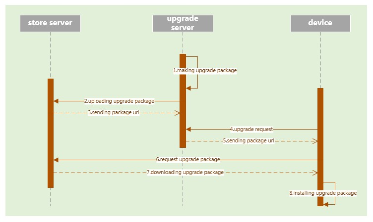
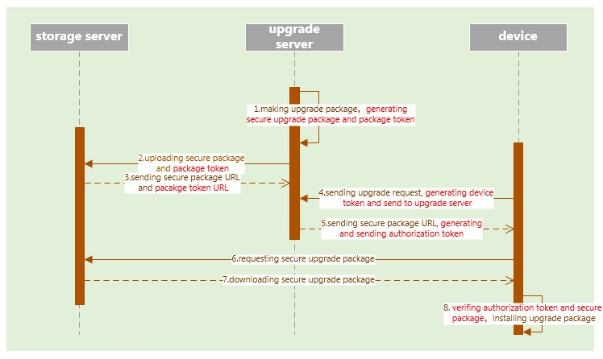

Apollo安全更新SDK
当前大部分的软件更新过程并没有被安全的保护起来，因此在更新过程中设备将被暴露在诸多的安全威胁下。Apollo安全更新SDK提供了多种保护更新安全的特性，并且能够很容易的被集成以使更新流程更加安全可靠。
特性
- 在储存和传输阶段，更新包被加密和签名保护。
- 服务器和设备可以互相鉴定
- 加密信息被安全合理的保护
- 服务器针对不同的设备提供不同的授权
- 防止攻击者利用服务器的应答对设备实施重传攻击
- 支持多个平台（Ubuntu 14, Centos 6, Centos 7 and Andorid）
更新流程
一种典型的更新流程如下图所示：

- 更新服务器生成更新包
- 更新包上传至存储服务器
- 存储服务器将更新包的url地址发送给更新服务器
- 设备发送更新请求到更新服务器
- 更新服务器将更新包的url回复给设备
- 设备从存储服务器请求下载更新包
- 更新包下载到设备上
- 设备安装更新包
在集成Apollo安全更新SDK后，更新流程修改为：

- 更新服务器生成安全更新包和更新包的token
- 安全更新包和更新包token上传至存储服务器
- 存储服务器将安全更新包的url和更新包token的url发送给更新服务器
- 设备生成设备token并发送到更新服务器
- 更新服务器生成授权token并将该token连同安全更新包的url一起发送给设备
- 设备向存储服务器请求安全更新包
- 安全更新包下载到设备上
- 设备使用授权token验证安全更新包，并生成原始更新包
- 设备安装更新包
用户指南
1. SDK文件布局
SDK包含4个目录： 1. python API: python接口 2. config: SDK根配置文件，日志文件 3. certificate: 证书文件 4. depend_lib: 依赖库
2. 接口
a) 初始化
该函数应当在使用安全更新API前调用
init_secure_upgrade(root_config_path)
input para:
root_config_path root configuration file path
b) 设备token生成
该函数用于生成设备token
sec_upgrade_get_device_token()
Output para:
return code: true generating device token successfully
false generating device token failed
Device_token: device token (string format)
c) 更新包生成
该函数用于生成安全更新包和更新包token
sec_upgrade_get_package(original_package_path,
secure_package_path,
package_token_path)
input para:
original_package_path original upgrade package file path
secure_package_path secure upgrade package file path
package_token_path secure package token file
output para:
return code:
true generating secure upgrade package successfully
false generating secure upgrade package failed
d) 授权token生成
该函数基于设备token和更新包token生成设备的授权token
sec_upgrade_get_authorization_token(package_token_path,
device_token_path)
input para:
package_token_path secure package token file path
device_token_path device token file path
output_para:
return code:
true generating authorization token successfully
false generating authorization token failed
authorization_token authorization token buffer(string formate)
e) 授权token和更新包检验
该函数使用授权token检验下载的安全更新包并生成原始更新包
sec_upgrade_verify_package(authorization_token_buffer,
secure_package_path)
input para:
authorization_token_buffer authorization token buffer(string format)
secure_package_path secure upgrade package file path
output para:
original_package_path original upgrade package file path
3. 附加信息
- SDK使用标准的PEM证书
- 在使用SDK前，使用者需要为服务器和设备生成两个不同的证书串
- 服务器证书串中的证书配置给服务器，请确保其不能对其他证书进行签名
- 设备证书串中的证书配置给设备，请确保其不能对其他证书进行签名
- 根密钥不应当配置给服务器和设备
- 使用者应当具有
config文件夹的读写权限和certificate文件夹的读权限